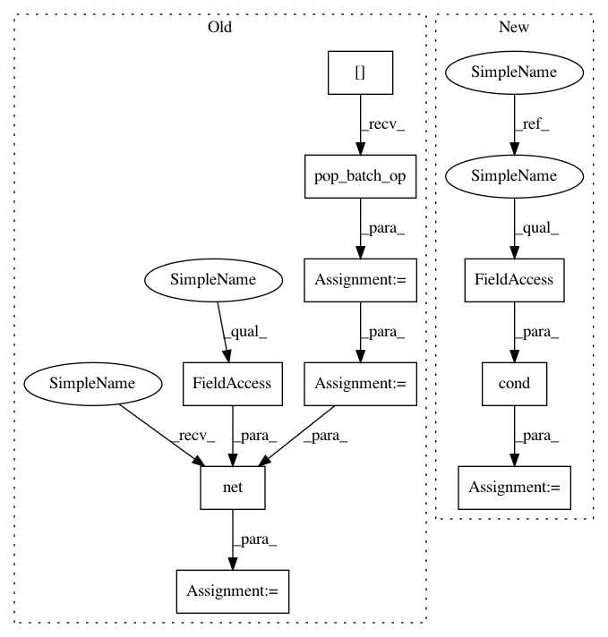

dfdad808d0979d6e45419720fa0d73b4cedcbb96,niftynet/application/segmentation_application.py,SegmentationApplication,connect_data_and_network,#SegmentationApplication#Any#Any#,218
Before Change
def connect_data_and_network(self,
outputs_collector=None,
gradients_collector=None):
data_dict = self.get_sampler()[0].pop_batch_op()
image = tf.cast(data_dict["image"], tf.float32)
net_out = self.net(image, self.is_training)
if self.is_training:
with tf.name_scope("Optimiser"):
After Change
b_regularizer=b_regularizer,
acti_func=self.net_param.activation_function)
def connect_data_and_network(self,
outputs_collector=None,
gradients_collector=None):
def data_net(for_training):
sampler = self.get_sampler()[0][0 if for_training else 1]
data_dict = sampler.pop_batch_op()
image = tf.cast(data_dict["image"], tf.float32)
return data_dict, self.net(image, for_training)
if self.is_training:
data_dict, net_out = tf.cond(self.is_validation,
lambda: data_net(False),
lambda: data_net(True))
with tf.name_scope("Optimiser"):
optimiser_class = OptimiserFactory.create(
name=self.action_param.optimiser)
In pattern: SUPERPATTERN
Frequency: 3
Non-data size: 10
Instances
Project Name: NifTK/NiftyNet
Commit Name: dfdad808d0979d6e45419720fa0d73b4cedcbb96
Time: 2017-11-01
Author: eli.gibson@gmail.com
File Name: niftynet/application/segmentation_application.py
Class Name: SegmentationApplication
Method Name: connect_data_and_network
Project Name: NifTK/NiftyNet
Commit Name: 53633acd7c861fd73e3954088a48d0ac8dc42895
Time: 2017-11-01
Author: eli.gibson@gmail.com
File Name: niftynet/application/gan_application.py
Class Name: GANApplication
Method Name: connect_data_and_network
Project Name: NifTK/NiftyNet
Commit Name: 53633acd7c861fd73e3954088a48d0ac8dc42895
Time: 2017-11-01
Author: eli.gibson@gmail.com
File Name: niftynet/application/regression_application.py
Class Name: RegressionApplication
Method Name: connect_data_and_network
Project Name: NifTK/NiftyNet
Commit Name: dfdad808d0979d6e45419720fa0d73b4cedcbb96
Time: 2017-11-01
Author: eli.gibson@gmail.com
File Name: niftynet/application/segmentation_application.py
Class Name: SegmentationApplication
Method Name: connect_data_and_network